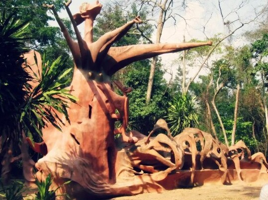

Come hungry
Try jollof rice, richly seasoned stews such as egusi, and suya—spiced grilled meat often enjoyed with onions. Recipes and names vary by region, household, and cook. Ask about ingredients and heat before ordering.
Food · Share the table
Listen, taste, learn
Nigeria is home to many peoples, languages, and local traditions. There is no single story that can represent everyone—so begin with curiosity, respect, and a willingness to listen.

Living heritage
On the outskirts of Osogbo, the Osun-Osogbo Sacred Grove brings together forest, river, shrines, sculpture, and Yoruba spiritual practice. It is recognized as a UNESCO World Heritage property and remains a place of worship and community—not simply a backdrop for visitors.
Visitors can show respect by following local guidance, asking before photographing people or ceremonies, and treating sacred places with care.
Read UNESCO's site overviewA few good starting points
Try jollof rice, richly seasoned stews such as egusi, and suya—spiced grilled meat often enjoyed with onions. Recipes and names vary by region, household, and cook. Ask about ingredients and heat before ordering.
Food · Share the table
From highlife and fuji to Afrobeats, Nigerian musicians draw on local traditions and global sounds. A live performance is a chance to hear how contemporary artists keep experimenting with rhythm and language.
Music · Follow the rhythm
Hausa, Yoruba, and Igbo are among Nigeria's most widely spoken languages, alongside English and hundreds of other languages. Greetings, dress, and customs differ; follow your host's lead and ask thoughtful questions.
People · Curiosity with respect
A helpful travel habit
“Arrive ready to learn, not expecting one place or person to explain a whole country.”Explore cultural places